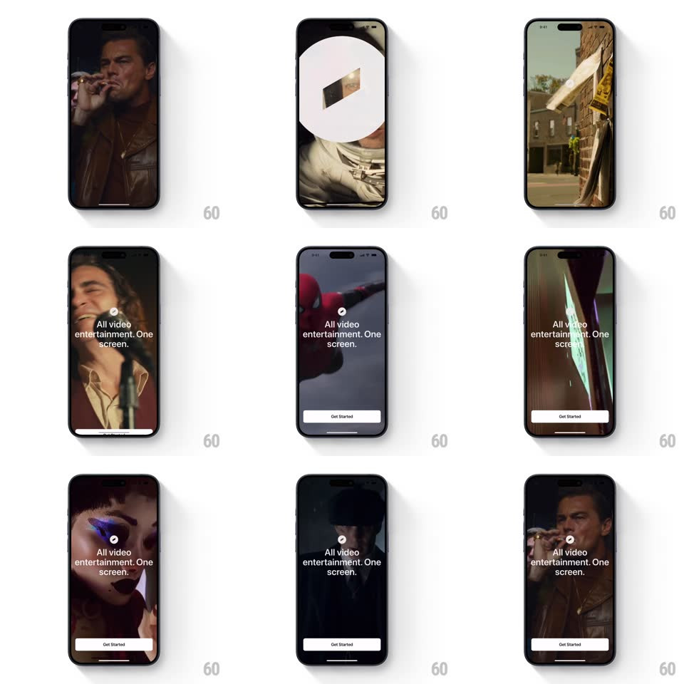

Media
Frame-by-frame

Rebuild this interaction 1:1: Must's cinematic onboarding - a white logo splash cuts to a full-screen montage of movie clips (DiCaprio, Interstellar's astronaut, Deadpool, Peaky Blinders) with "All video entertainment. One screen." overlaid and a Get Started button, the clips crossfading until the tap fades everything to a clean loading state.

Rebuild this interaction 1:1: Must's cinematic onboarding - a white logo splash cuts to a full-screen montage of movie clips (DiCaprio, Interstellar's astronaut, Deadpool, Peaky Blinders) with "All video entertainment. One screen." overlaid and a Get Started button, the clips crossfading until the tap fades everything to a clean loading state. ## Integration Integration: stack-agnostic spec - springs given as stiffness/damping, timed motions as duration + curve; map every value to your framework and animation library of choice. ## Scene Opens white with a faint centered logo. Main: full-bleed video clips cycling, a small circular play glyph centered above the headline "All video entertainment. One screen." (white, two lines), and a white "Get Started" pill pinned bottom. ## Motion spec Pattern: cinematic clip carousel with clean-exit. - Splash: the logo blurs and dissolves (400ms) directly into the first clip - a hard tonal cut from sterile white to cinema. - Clips crossfade every ~2.5s (700ms dissolve) with a slow Ken Burns push (scale 1 -> 1.06 per clip); the headline and play glyph stay fixed, only the footage changes. - The play glyph pulses gently (scale 1 -> 1.08, 1.6s sine) - quiet invitation. - Tap Get Started: the button dips (scale 0.97, 120ms), the video and headline fade out together (400ms) to a clean white screen with a small centered spinner - the app boots without a route flash. ## Calibration - Clips are dark-graded so the white headline always reads; keep a 20% black scrim behind text. - The carousel loops seamlessly - the last clip dissolves back into the first. ## Reduced motion Static poster frame; single crossfade to the loading state. ## Don't miss - The headline never moves - the movies audition beneath a fixed promise. - Exit is to white-and-spinner, not straight to content - the beat of cleanliness is part of the brand.